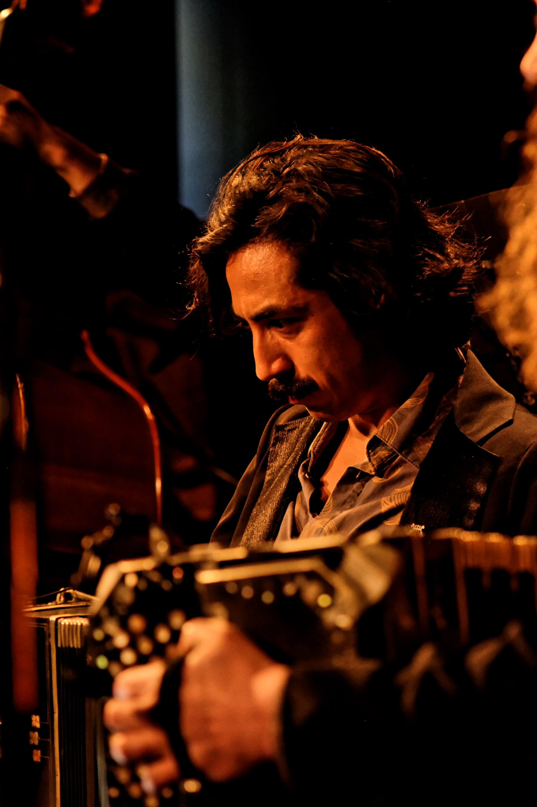
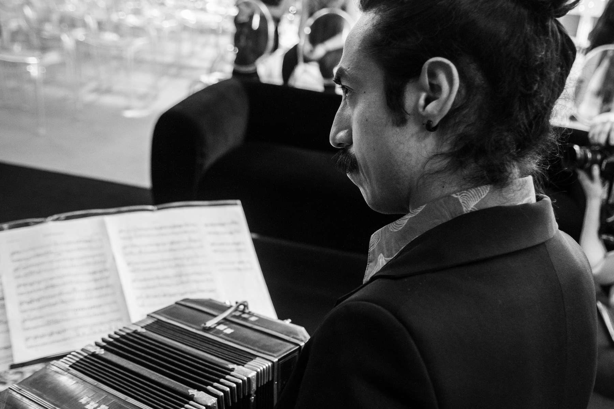

Jaime Granda is a professional bandoneonist from Ecuador, based in Buenos Aires, Argentina. His work includes performances in concert halls, cultural venues, festivals, recordings, and collaborative projects with musicians from a wide range of backgrounds.
He is the first Ecuadorian bandoneonist to be accepted into the Emilio Balcarce Tango Orchestra, a two-year intensive program run in Buenos Aires by the Argentine Ministry of Culture. He has also served as principal bandoneonist in the orchestra of “Esquina Homero Manzi” (2024–2025), and currently performs in renowned tango venues such as “Tango Porteño” and “Hotel Faena”.
He regularly performs with “Nina Urku”, his personal project focused on original music, and has been part of numerous artistic collaborations. In 2023 and 2024, he toured Ecuador as a soloist, presenting his music in concert halls in Quito and Ambato. He has also performed in concerts in Chile, France, and Spain.

Original compositions and arrangements available for free download.
All scores are provided free of charge for personal use. If you perform or record any of these works, I would be delighted to hear from you.
Original compositions for concerts, recordings and interdisciplinary artistic projects.
Custom arrangements for tango ensembles, chamber groups and orchestras, tailored to each project.
Private lessons for all levels. Workshops and masterclasses for musicians and institutions.
Professional bandoneon recordings for albums, audiovisual productions and collaborative projects.
Interested in working together?
Get in Touch →